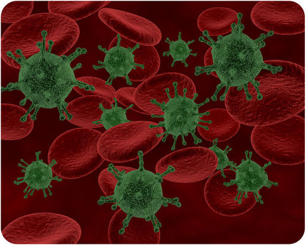
Is this picture a colorful work of abstract art, or is it something else? Imagine shrinking down to a tiny size, so small you could enter a blood vessel. The picture shows what you might see rushing toward you. Do you know what the red objects are? If you guessed red blood cells, you are right. What about the knobby green objects? Watch out for these! They are viruses that have invaded the blood. When you read this book, you will take an exciting journey into the realm of blood cells, viruses, and just about everything else that is related to life. You will learn how your own body works, what makes living things unique, and what you and viruses have in common. This first chapter explains how scientists learn about the natural world and introduces you to biology, the science of life.
Did you ever wonder why giraffes have such long necks or how birds learn to sing their special songs? If you ever asked questions such as these about the natural world, then you were thinking like a scientist. The word science comes from a Latin word that means “knowledge.” Science is a distinctive way of gaining knowledge about the natural world that starts with a question and then tries to answer the question with evidence and logic. Science is an exciting exploration of all the whys and hows that any curious person might have about the world. You can be part of that exploration. Besides your curiosity, all you need is a basic understanding of how scientists think and how science is done, starting with the goal of science.
The goal of science is to understand the natural world. To achieve this goal, scientists make certain assumptions. They assume that:
Scientists think of nature as a single system controlled by natural laws. By discovering natural laws, scientists strive to increase their understanding of the natural world. Laws of nature are expressed as scientific laws. A scientific law is a statement that describes what always happens under certain conditions in nature.
An example of a scientific law is the law of gravity, which was discovered by Sir Isaac Newton (see Figure below ). The law of gravity states that objects always fall towards Earth because of the pull of gravity. Based on this law, Newton could explain many natural events. He could explain not only why objects such as apples always fall to the ground, but he could also explain why the moon orbits Earth. Isaac Newton discovered laws of motion as well as the law of gravity. His laws of motion allowed him to explain why objects move as they do.
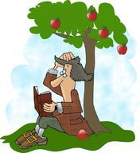
Did Newton discover the law of gravity when an apple fell from a tree and hit him on the head? Probably not, but observations of nature are often the starting point for new ideas about the natural world.
Science is more of a process than a set body of knowledge. Scientists are always testing and revising their ideas, and as new observations are made, existing ideas may be challenged. Ideas may be replaced with new ideas that better fit the facts, but more often existing ideas are simply revised. For example, when Albert Einstein developed his theory of relativity, he didn’t throw out Newton’s laws of motion. Instead, he showed that Newton’s laws are a part of a bigger picture. In this way, scientists gradually build an increasingly accurate and detailed understanding of the natural world.
Many scientific ideas have withstood the test of time. For example, about 200 years ago, the scientist John Dalton proposed atomic theory—the theory that all matter is made of tiny particles called atoms. This theory is still valid today. There are many other examples of basic science ideas that have been tested repeatedly and found to be true. You will learn about many of them as you study biology.
Science rests on evidence and logic, so it deals only with things that can be observed. An observation is anything that is detected either through human senses or with instruments and measuring devices that extend human senses. Things that cannot be observed or measured by current means—such as supernatural beings or events—are outside the bounds of science. Consider these two questions about life on Earth:
The first question can be answered by science on the basis of scientific evidence and logic. The second question could be a matter of belief. Therefore, it is outside the realm of science.
“We also discovered that science is cool and fun because you get to do stuff that no one has ever done before.” In the article Blackawton bees, published by eight to ten year old students: Biology Letters (2010) http://rsbl.royalsocietypublishing.org/content/early/2010/12/18/rsbl.2010.1056.abstract .
There are basic methods of gaining knowledge that are common to all of science. At the heart of science is the scientific investigation, which is done by following the scientific method . A scientific investigation is a plan for asking questions and testing possible answers. It generally follows the steps listed in Figure below . See http://www.youtube.com/watch?v=KZaCy5Z87FA for an overview of the scientific method.
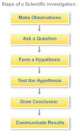
Steps of a Scientific Investigation. A scientific investigation typically has these steps.
A scientific investigation typically begins with observations. You make observations all the time. Let’s say you take a walk in the woods and observe a moth, like the one in Figure below , resting on a tree trunk. You notice that the moth has spots on its wings that look like eyes. You think the eye spots make the moth look like the face of an owl.
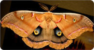
Does this moth remind you of an owl?
Observations often lead to questions. For example, you might ask yourself why the moth has eye spots that make it look like an owl’s face. What reason might there be for this observation?
The next step in a scientific investigation is forming a hypothesis. A hypothesis is a possible answer to a scientific question, but it isn’t just any answer. A hypothesis must be based on scientific knowledge, and it must be logical. A hypothesis also must be falsifiable. In other words, it must be possible to make observations that would disprove the hypothesis if it really is false. Assume you know that some birds eat moths and that owls prey on other birds. From this knowledge, you reason that eye spots scare away birds that might eat the moth. This is your hypothesis.
To test a hypothesis, you first need to make a prediction based on the hypothesis. A prediction is a statement that tells what will happen under certain conditions. It can be expressed in the form: If A occurs, then B will happen. Based on your hypothesis, you might make this prediction: If a moth has eye spots on its wings, then birds will avoid eating it.
Next, you must gather evidence to test your prediction. Evidence is any type of data that may either agree or disagree with a prediction, so it may either support or disprove a hypothesis. Assume that you gather evidence by making more observations of moths with eye spots. Perhaps you observe that birds really do avoid eating the moths. This evidence agrees with your prediction.
Evidence that agrees with your prediction supports your hypothesis. Does such evidence prove that your hypothesis is true? No; a hypothesis cannot be proven conclusively to be true. This is because you can never examine all of the possible evidence, and someday evidence might be found that disproves the hypothesis. Nonetheless, the more evidence that supports a hypothesis, the more likely the hypothesis is to be true.
The last step in a scientific investigation is communicating what you have learned with others. This is a very important step because it allows others to test your hypothesis. If other researchers get the same results as yours, they add support to the hypothesis. However, if they get different results, they may disprove the hypothesis. When scientists share their results, they should describe their methods and point out any possible problems with the investigation. For example, while you were observing moths, perhaps your presence scared birds away. This introduces an error into your investigation. You got the results you predicted (the birds avoided the moths while you were observing them), but not for the reason you hypothesized. Other researchers might be able to think of ways to avoid this error in future studies.
Figure below shows a laboratory experiment involving plants. An experiment is a special type of scientific investigation that is performed under controlled conditions, usually in a laboratory. Some experiments can be very simple, but even the simplest contributed important evidence that helped scientists better understand the natural world. An example experiment can be seen here http://www.youtube.com/watch?v=dVRBDRAsP6U or here http://www.youtube.com/watch?v=F10EyGwd57M .
A laboratory experiment studying plant growth. What might this experiment involve?
Some experiments are much more sophisticated than those shown above. For example, scientists at the University of California, Santa Cruz are using robots to sort through thousands of marine chemicals in search of cures for diseases like cholera, breast cancer, and malaria. These experiments are described in the following links:
http://www.kqed.org/quest/blog/2009/03/20/reporters-notes-medicine-from-the-ocean-floor/
http://www.kqed.org/quest/radio/medicine-from-the-ocean-floor
http://science.kqed.org/quest/slideshow/web-extra-medicine-from-the-ocean-floor-slideshow/
An experiment generally tests how one variable is affected by another. The affected variable is called the dependent variable . In the plant experiment shown above, the dependent variable is plant growth. The variable that affects the dependent variable is called the independent variable . In the plant experiment, the independent variable is fertilizer—some plants will get fertilizer, others will not. In any experiment, other factors that might affect the dependent variable must be controlled. In the plant experiment, what factors do you think should be controlled? ( Hint: What other factors might affect plant growth?)
The sample in an experiment or other investigation consists of the individuals or events that are studied. Typically, the sample is much smaller than all such individuals or events that exist in the world. Whether the results based on the sample are true in general cannot be known for certain. However, the larger the sample is, the more likely it is that the results are generally true. Similarly, the more times that an experiment is repeated and the same results obtained, the more likely the results are valid. This is why scientific experiments should always be repeated.
Experiments are sometimes hard or even impossible to do. For example, a scientist who is studying an extinct animal cannot experiment with the animal because it no longer exists. The scientist must rely instead on evidence in the natural world, such as fossils that the extinct animal left behind.
When scientists do studies in nature, they usually cannot control factors that might affect the variables they are investigating. This is a drawback, because it may make the observations difficult to interpret. Without controls, it may not be possible to determine which of many factors explain the observations. For example, assume you are studying how plants grow in a forest or field. You cannot control the amount of sunlight or rain water the plants receive, so it will be difficult to determine which factors most influence plant growth. On the other hand, a natural study shows what actually occurs in nature. Therefore, it may provide a truer picture of what happens in the real world than an experiment does.
Another way to gain scientific knowledge without experiments is by making and manipulating models. A model is a representation of part of the real world. Did you ever build a model car? Scientific models are something like model cars; they represent the real world but are simpler than the real world. This is one reason that models are especially useful for investigating complex systems. By using a model, scientists can better understand how the real system works. An example of a scientific model is shown in Figure below . Do you know what systems these two models represent?
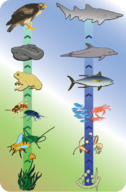
Food Chains. These two food chains represent complex systems in nature. They make the systems easier to understand. These are simple conceptual models. Models of very complex systems are often based on mathematical equations or computer simulations.
Like a hypothesis, a model must be evaluated. It is assessed by criteria such as how well it represents the real world, what limitations it has, and how useful it is. The usefulness of a model depends on how well its predictions match observations of the real world. Even when a model’s predictions match real-world observations, however, it doesn’t prove that the model is true or that it is the only model that works.
With repeated testing, some hypotheses may eventually become scientific theories. A scientific theory is a broad explanation for events that is widely accepted as true. To become a theory, a hypothesis must be tested over and over again, and it must be supported by a great deal of evidence. People commonly use the word theory to describe a guess about how or why something happens. For example, you might say, “I think a woodchuck dug this hole in the ground, but it’s just a theory.” Using the word theory in this way is different from the way it is used in science. A scientific theory is more like a fact than a guess because it is so well-supported. There are several well-known theories in biology, including the theory of evolution, cell theory, and germ theory. You will read about all three of these theories in the next lesson “Biology: The Study of Life.” A video explaining scientific theories can be seen at http://www.youtube.com/watch?v=S5YGhprR6KE .
For hundreds of years, scientists have been using design ideas from structures in nature. Now, biologists and engineers at the University of California, Berkeley are working together to design a broad range of new products, such as life-saving milli-robots modeled on the way cockroaches run and adhesives based on the amazing design of a gecko's foot. This process starts with making observations of nature, which lead to asking questions and to the additional aspects of the scientific process. Bio-Inspiration: Nature as Muse can be observed at http://www.kqed.org/quest/television/bioinspiration-nature-as-muse .
Click on the image above for more content
1. What is science? What is the goal of science?
2. Outline the steps of a scientific investigation.
3. What is a scientific hypothesis? What characteristics must a hypothesis have to be useful in science?
4. Give an example of a scientific question that could be investigated with an experiment. Then give an example of scientific question that could not be investigated in this way.
5. What might be an advantage of collecting evidence in a natural setting rather than in a lab?
6. Identify the independent and dependent variables in the following experiment:
A scientist grew bacteria on gel in her lab. She wanted to find out if the bacteria would grow faster on gel A or gel B. She placed a few bacteria on gel A and a few on gel B. After 24 hours, she observed how many bacteria were present on each type of gel.
7. Explain why science cannot provide answers to all questions.
8. Contrast how the term theory is used in science and in everyday language.
9. Explain how a hypothesis could become a theory.
The Points to Consider at the end of each lesson in this book will help you relate what you just learned to what is coming next. The questions will help guide you to the next lesson or chapter. Before reading the next lesson of this chapter, consider these points:
In this book, you will learn about one particular branch of science, the branch called biology. Biology is the science of life. Do you know what life is? Can you define it? Watch http://vimeo.com/15407847 to begin your journey into the study of life.
Look at the duck decoy in Figure below . It looks very similar to a real duck. Of course, real ducks are living things. What about the decoy duck? It looks like a duck, but it is actually made of wood. The decoy duck doesn’t have all the characteristics of a living thing. What characteristics set the real ducks apart from the decoy duck? What are the characteristics of living things?
This duck decoy looks like it’s alive. It even fools real ducks. Why isn’t it a living thing?
To be classified as a living thing, an object must have all six of the following characteristics:
All living things detect changes in their environment and respond to them. What happens if you step on a rock? Nothing; the rock doesn’t respond because it isn’t alive. But what if you think you are stepping on a rock and actually step on a turtle shell? The turtle is likely to respond by moving—it may even snap at you!
All living things grow and develop. For example, a plant seed may look like a lifeless pebble, but under the right conditions it will grow and develop into a plant. Animals also grow and develop. Look at the animals in Figure below . How will the tadpoles change as they grow and develop into adult frogs?
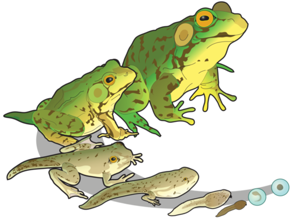
Tadpoles go through many changes to become adult frogs.
All living things are capable of reproduction. Reproduction is the process by which living things give rise to offspring. Reproducing may be as simple as a single cell dividing to form two daughter cells. Generally, however, it is much more complicated. Nonetheless, whether a living thing is a huge whale or a microscopic bacterium, it is capable of reproduction.
All living things are able to maintain a more-or-less constant internal environment. They keep things relatively stable on the inside regardless of the conditions around them. The process of maintaining a stable internal environment is called homeostasis . Human beings, for example, maintain a stable internal body temperature. If you go outside when the air temperature is below freezing, your body doesn’t freeze. Instead, by shivering and other means, it maintains a stable internal temperature.
All living things—even the simplest life forms—have complex chemistry. Living things consist of large, complex molecules, and they also undergo many complicated chemical changes to stay alive. Complex chemistry is needed to carry out all the functions of life.
All forms of life are built of cells. A cell is the basic unit of the structure and function of living things. Living things may appear very different from one another on the outside, but their cells are very similar. Compare the human cells and onion cells in Figure below . How are they similar? If you click on the animation titled Inside a Cell at the link below, you can look inside a cell and see its internal structures. http://bio-alive.com/animations/cell-biology.htm
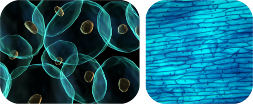
A representation of human Cells (left). Onion Cells (right). If you looked at human and onion cells under a microscope, this is what you might see.
Four unifying principles form the basis of biology. Whether biologists are interested in ancient life, the life of bacteria, or how humans could live on the moon, they base their overall understanding of biology on these four principles:
According to the cell theory , all living things are made up of cells, and living cells always come from other living cells. In fact, each living thing begins life as a single cell. Some living things, such as bacteria, remain single-celled. Other living things, including plants and animals, grow and develop into many cells. Your own body is made up of an amazing 100 trillion cells! But even you—like all other living things—began life as a single cell. More of the cell theory will be discussed in a later chapter.
The gene theory is the idea that the characteristics of living things are controlled by genes, which are passed from parents to their offspring. Genes are located on larger structures, called chromosomes, that are found inside every cell. Chromosomes, in turn, contain large molecules known as DNA (deoxyribonucleic acid). Molecules of DNA are encoded with instructions that tell cells what to do. To see how this happens, click on the animation titled Journey into DNA at the link below. http://www.pbs.org/wgbh/nova/genome/dna.html
Homeostasis, or keeping things constant, is not just a characteristic of living things. It also applies to nature as a whole. Consider the concentration of oxygen in Earth’s atmosphere. Oxygen makes up 21% of the atmosphere, and this concentration is fairly constant. What keeps the concentration of oxygen constant? The answer is living things. Most living things need oxygen to survive, and when they breathe, they remove oxygen from the atmosphere. On the other hand, many living things, including plants, give off oxygen when they make food, and this adds oxygen to the atmosphere. The concentration of oxygen in the atmosphere is maintained mainly by the balance between these two processes. A quick overview of homeostasis can be viewed at http://www.youtube.com/watch?v=DFyt7FJn-UM .
Evolution is a change in the characteristics of living things over time. Evolution occurs by a process called natural selection. In natural selection , some living things produce more offspring than others, so they pass more genes to the next generation than others do. Over many generations, this can lead to major changes in the characteristics of living things. Evolution explains how living things are changing today and how modern living things have descended from ancient life forms that no longer exist on Earth. As living things evolve, they generally become better suited for their environment. This is because they evolve adaptations. An adaptation is a characteristic that helps a living thing survive and reproduce in a given environment. Look at the mole in Figure below . It has tentacles around its nose that it uses to sense things by touch. The mole lives underground in the soil where it is always dark. However, by using its touch organ, it can detect even tiny food items in the soil in total darkness. The touch organ is an adaptation because it helps the mole survive in its dark, underground environment.
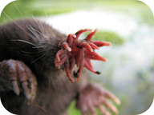
This mole uses its star-shaped nose organ to sense food by touch in the dark. The mole’s very large front claws are also an adaptation for its life in the soil. Can you explain why?
A cartoon depicting the evolution of Homer (Simpson) can be viewed at http://www.youtube.com/watch?v=faRlFsYmkeY .
All living things depend on their environment to supply them with what they need, including food, water, and shelter. Their environment consists of physical factors—such as soil, air, and temperature—and also of other organisms. An organism is an individual living thing. Many living things interact with other organisms in their environment. In fact, they may need other organisms in order to survive. For example, living things that cannot make their own food must eat other organisms for food. Other interactions between living things include symbiosis and competition.
Symbiosis is a close relationship between organisms of different species in which at least one of the organisms benefits. The other organism may also benefit, or it may be unaffected or harmed by the relationship. Figure below shows an example of symbiosis. The birds in the picture are able to pick out food from the fur of the deer. The deer won't eat the birds. In fact, the deer knowingly lets the birds rest on it. What, if anything, do you think the deer gets out of the relationship?
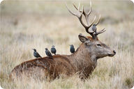
A flock of starlings looks out, before searching for parasites on a red deer stag.
Competition is a relationship between living things that depend on the same resources. The resources may be food, water, or anything else they both need. Competition occurs whenever they both try to get the same resources in the same place and at the same time. The two organisms are likely to come into conflict, and the organism with better adaptations may win out over the other organism.
The living world can be organized into different levels. For example, many individual organisms can be organized into the following levels:
Examples of these levels of organization are shown in Figure below .

An individual mouse is made up of several organ systems. The system shown here is the digestive system, which breaks down food to a form that cells can use. One of the organs of the digestive system is the stomach. The stomach, in turn, consists of different types of tissues. Each type of tissue is made up of cells of the same type.
There are also levels of organization above the individual organism. These levels are illustrated in Figure below .
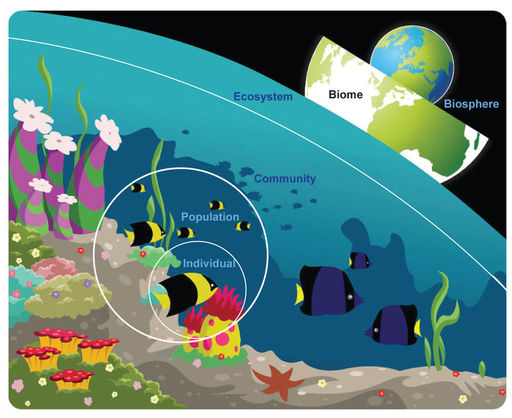
This picture shows the levels of organization in nature, from the individual organism to the biosphere.
Life on Earth is very diverse. The diversity of living things is called biodiversity . A measure of Earth’s biodiversity is the number of different species of organisms that live on Earth. At least 10 million different species live on Earth today. They are commonly grouped into six different kingdoms. Examples of organisms within each kingdom are shown in Figure below .
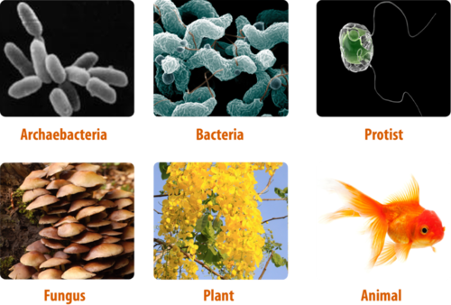
Diversity of life from Archaebacteria to Plants and Animals.
The diversity of life on Earth today is the result of evolution. Life began on Earth at least 4 billion years ago, and it has been evolving ever since. At first, all living things on Earth were simple, single-celled organisms. Much later, the first multicellular organisms evolved, and after that, Earth’s biodiversity greatly increased. Figure below shows a timeline of the history of life on Earth. You can also find an interactive timeline of the history of life at the link below. http://www.johnkyrk.com/evolution.html
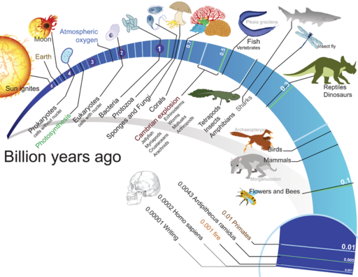
This timeline shows the history of life on Earth. In the entire span of the time, humans are a relatively new addition.
Today, scientists accept the evolution of life on Earth as a fact. There is too much evidence supporting evolution to doubt it. However, that wasn’t always the case. An introduction to evolution and natural selection can be viewed at http://www.youtube.com/watch?v=GcjgWov7mTM .

Click on the image above for more content
The idea of evolution has been around for centuries. In fact, it goes all the way back to the ancient Greek philosopher Aristotle. However, evolution is most often associated with Charles Darwin. Darwin published a book on evolution in 1869 titled On the Origin of Species . In the book, Darwin stated the theory of evolution by natural selection. He also presented a great deal of evidence that evolution occurs. Despite all the evidence Darwin presented, his theory was not well-received at first. Many people found it hard to accept the idea that humans had evolved from an ape-like ancestor, and they saw evolution as a challenge to their religious beliefs. Look at the cartoon in Figure below . Drawn in 1871, it depicts Darwin himself as an ape. The cartoon reflects how many people felt about Darwin and his theory during his own time. Darwin had actually expected this type of reaction to his theory and had waited a long time before publishing his book for this reason. It was only when another scientist, named Alfred Wallace, developed essentially the same theory of evolution that Darwin put his book into print.
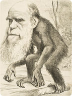
Charles Darwin’s name is linked with the theory of evolution. This cartoon from the 1870s makes fun of both Darwin and his theory.
Although Darwin presented a great deal of evidence for evolution in his book, he was unable to explain how evolution occurs. That’s because he knew nothing about genes. As a result, he didn’t know how characteristics are passed from parents to offspring, let alone how they could change over time.
Since Darwin’s time, scientists have gathered even more evidence to support the theory of evolution. Some of the evidence comes from fossils, and some comes from studies that show how similar living things are to one another. By the 1930s, scientists had also learned about genes. As a result, they could finally explain how characteristics of organisms could pass from one generation to the next and change over time.
Using modern technology, scientists can now directly compare the genes of living species. The more genes different species share in common, the more closely related the species are presumed to be. Consider humans and chimpanzees. They share about 98% of their genes. This means that they shared a common ancestor in the not-too-distant past. This is just one of many pieces of evidence that show we are part of the evolution of life on Earth.
Today, evolution is still questioned by some people. Often, people who disagree with the theory of evolution do not really understand it. For example, some people think that the theory of evolution explains how life on Earth first began. In fact, the theory explains only how life changed after it first appeared. Some people think the theory of evolution means that humans evolved from modern apes. In fact, humans and modern apes have a common ancestor that lived several million years ago. These and other misconceptions about evolution contribute to the controversy that still surrounds this fundamental principle of biology.
1. List the six characteristics of all living things.
2. Identify four unifying principles of modern biology.
3. Outline the levels of organization of a complex, multicellular organism such as a mouse, starting with the cell.
4. What is homeostasis? Give an example.
5. Describe examples of ways that you depend on other living things.
6. Assume that you found an object that looks like a dead twig. You wonder if it might be a stick insect. How could you determine if it is a living thing?
7. Compare and contrast symbiosis and competition.
8. Explain how a population differs from a community.
9. How is gene theory related to the theory of evolution?
In this lesson, you learned that living things have complex chemistry.
Opening image copyright Kirsty Pargeter, 2010. http://www.shutterstock.com . Used under license from Shutterstock.com.
{kind=link}
{kind=link}
{kind=link}
{kind=link}
{kind=link}
{kind=link}